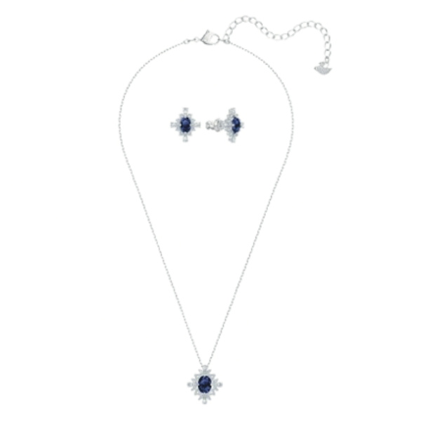

September Teddy
A September teddy bear my father gave me the day I was born. One of my last things to remember him by.
Seabiscuit
A clip clop wonderhorse toy my father gave me on my fourth birthday, the last birthday he spent with me before passing.
Bijoux Jr.
My first Build-A-Bear my aunt got me. I chose the dog that looked exactly like my childhood dog, Bijoux.
Marie Slippers
Aristocats was my favourite Disney movie. Wore these every day until I grew out of them. Gave them to my cousin.
Aristocats was my favourite Disney movie. Wore these every day until I grew out of them. Gave them to my cousin.
Hello Kitty
My first Hello Kitty sanrio plushie that would later on start an entire collection of Sanrio plushies.
Toothless
A Toothless McDonald's Happy Meal toy. I played with it nonstop, obsessed with the movie. I lost the toy.

Bratz Guitar
Started my love and obsession with guitars. Had a whole photoshoot on Christmas with it. My favourite for a while.
Shadow
My first Webkinz my mother got me - a black cat. I named him Shadow and brought him for my witch halloween costume.
Shaymin
My favourite Pokémon. Went to Canada's Wonderland and wanted the plushie. My uncle played and won it for me.
Holiday Barbie
A holiday Barbie doll I wanted so bad but couldn't afford. One of my great aunts gave it to me as a complete surprise.
Custard
A pink fluffy TY plushie I named Custard (after the cat from Strawberry Shortcake.) I still cuddle her.
Draculaura
My first Monster High doll my mother gets me. The beginning of a lifelong obsession with vampires.
My first Monster High doll my mother gets me. The beginning of a lifelong obsession with vampires.
iPod Nano
The beginning of my music addiction. My aunt gave it to me and I never went anywhere without music in my ears.
Wings of Fire
These books intensified my reptile/dinosaur/dragon obsession. I still think of the plot to this day.
Poison Apple Books
My mother bought me these two Vampire 'Poison Apple' books and I was obsessed. I collected these Poison Apple books.
Monster High Cam
A Monster High Camcorder my mother bought me from Sears Catalogue. Started my love for photography.
Paper Jamz Guitar
One of my aunts gave this to me on Christmas after learning I liked guitar. My first introduction to Fall Out Boy.
Nikon Coolpix
My first actual Digital Camera from my mom and aunt that I used on a family trip to Hawaii in middle school.
First Sketchbook
A Dollarama sketchbook my mom had brought home one day. Kickstarted my passion for art as I sketched in it every day.
iPod Nano
A smaller iPod nano from my aunt that I always clipped to a hair tie on my wrist. Never went anywhere without music.
A smaller iPod nano from my aunt that I always clipped to a hair tie on my wrist. Never went anywhere without music.
First Act Guitar
My first electric guitar from my uncle (alongside a Fender amplifier.) Almost got a noise complaint from the neigbours.
iPod Touch
This began my social media addiction. Downloaded Instagram, Snapchat, Tumblr, etc. Made online friends.
More Sketchbooks
More advanced Strathmore sketchbooks from my mother as I decided I wanted to pursue art as a career and a passion.
Nikon D7500
When my aunt found out I was going into Graphic Design & taking photography classes, she gave me her DSLR.
Uncle's Acoustic
My uncle gave me his acoustic guitar as encouragement for me to continue learning guitar. I play every summer.
Drogon FIgure
Bought with my birthday money from grandma at my first convention. My favourite Game of Throne's dragon.
Toothless Plush
The 25th Anniversary Toothless Build-a-Bear I got with birthday money from my mother. Hunted this down.

Dracula
The clothbound classic hardcover copy of 'Dracula' by Bram Stoker. My love for vampires will never die.
The clothbound classic hardcover copy of 'Dracula' by Bram Stoker. My love for vampires will never die.
Wishbone Earrings
Wishbone earrings my sister gave me after reuniting after 20 years spent apart. We have matching pairs.

Cinnamorroll Plush
A Christmas gift of my favourite Sanrio character as a Squishmallow plushie from my darling boyfriend.
